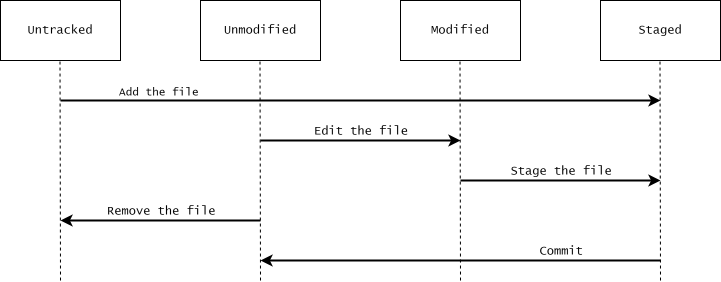

2 Getting started
In this chapter we will look at some basic configurations of Git, introduce the most basic Git commands, talk about the different states of files, and finally how you can find help on how to use Git commands.
2.1 Basic configuration of Git
First of all, we need to do some basic configurations of Git, which we will do using the git config command. Here we will only briefly explain what commands to type in the terminal without any explanation on how commands actually work, and what exactly they do. If you want to learn more about how to configure Git, see Appendix C.
Change the core editor
The first, and most important, thing we need to configure, is the text editor that Git opens when you need to type in a message. Git for Windows comes with a Vim installation, and by default Git uses Vim as a text editor. Vim is amazing, but it is also a complete mystery to people who do not know how it works.1 To change the default editor to Notepad, which is pre-installed on Windows, write the following command in your terminal:
$ git config set --global core.editor notepad
This tells Git to use Notepad as a text editor in all your Git repositories.
Identify yourself
Another thing you should configure in your Git installation is your username and email. Every commit you make to your Git repository contains information on the identity of the person who made it, and this information should be informative, i.e. be your real name and email. This ensures that if you are collaborating on a Git repository or sharing the repository online, it is clear to others who made what commits to the repository. You can set your username and email by writing the following commands in your terminal:
$ git config set --global user.name "Your name" $ git config set --global user.email "your@email.com"
2.2 Initializing and cloning Git repositories
To start using Git, we need to either initialize a new Git repository, or clone an existing one.
Initialize a new Git repository
To initialize a Git repository in a directory, cd to the directory and use the git init command. This creates an empty Git repository in a new (hidden) subdirectory named “.git”.
$ cd ~ # Change working directory to the home directory $ mkdir new-git-repository # Make a new directory in home directory $ cd new-git-repo # Change working directory $ git init # Initialize Git repository $ ls -A # List all subdirectories .git/
Clone an existing Git repository
You can clone an existing Git repository using the git clone command. This makes a copy of the repository in a new directory in the working directory.
You can clone a repository from anyway, e.g. from another folder on your machine, from a folder on a network drive, or from a url. The code for this tutorial is on available on Github. You could clone the repository by using the command below:
$ git clone "https://github.com/thomas-rasmussen/git-tutorial.git"
This will clone the repository in a folder named “git-tutorial” in your current work directory.
2.3 Lifecycle of files
Whether you have initialized a new Git repository or cloned an existing one, you now have a Git repository on your local computer. At this point we are going to take a moment to talk about the different states that files in Git repository can be in.
Each file in a Git repository can be in one of two states: tracked or untracked. Tracked files are files that Git know about, i.e. files that were included in the last snapshot and files that are staged. These files can be unmodified, modified, or staged, but they are all tracked. Untracked files is everything else.
When you edit a tracked file, Git sees it as modified since it is different from the last snapshot. You can then stage files for the next commit, and finally commit them. When you commit the file to a snapshot, the file goes back to being viewed as unmodified. You then then continue editing, staging and commiting files, and thus the cycle repeats.

2.4 Checking the state of files
So how do we check the state of our files? The main command to do this is git status. If you run this command right after cloning a repository or commiting a snapshot of your files, you will see something like this.
$ git status On branch main nothing to commit, working tree clean
As the message states, the working tree is clean, i.e. the files in the repository are all unmodified with respect to the last commit. Furthermore, there are no untracked files in the repository, or they would be listed.
2.5 Adding files to the index
To update the index, we use the git add command. This will update the index using the current content of the working tree, which can include updating files that are already in the index, include new files, or remove files that are no longer in the working tree. The index holds a snapshot of the content that we want to include in our next commit. To update the index based on all files in the repository you can use the commmand
$ git add .
The “.” means “current directory”. You can also specify individual files to add to the index:
$git add file_a.txt file_b.txt
2.6 Committing files to the repository
We can commit files to the repository with the git commit command. This commands uses the current content of the index to create a new commit to the repository.
$ git commit -m"Commit message"
If you do not specify a commit message with the -m option, Git will open a text editor, and request that you enter one there. After typing the commit message, save the file, and exit the editor.
2.7 Example
Let’s create our own Git repository from scratch to illustrate the concepts that have been introduced so far. First, we initialize a new Git repository in the home directory, and cd into the directory.
$ cd ~ $ mkdir git-tutorial-example $ cd git-tutorial-example $ git init
Lets run git status to see the status of the working tree at this point.
$ git status On branch main No commits yet nothing to commit (create/copy files and use "git add" to track)
As expected we are told that nothing has been committed to the repository, and that no files are tracked.
Next, we create a new file in the directory.
$ echo "Content of file_a.txt" > file_a.txt
If we run git status again:
$ git status On branch main No commits yet Untracked files: (use "git add..." to include in what will be committed) file_a.txt nothing added to commit but untracked files present (use "git add" to track)
Git now notifies us about the presence on an untracked file in the repository. Lets add the file to the index for the next commit, and run git status once more:
$ git add file_a.txt $ git status On branch main No commits yet Changes to be committed: (use "git rm --cached..." to unstage) new file: file_a.txt
Git now tells us that file_a.txt has been added to the index and will be included, in its current state, to the next commit. Finally, lets commit the file to the repository and run git status a final time:
$ git commit file_a.txt -m"Add file_a.txt to repository" $ git status On branch main nothing to commit, working tree clean
Git now informs us that there is nothing to commit and that the working tree is clean. This is because the current state of file_a.txt is the same as the state of file_a.txt in the repository.
2.8 Accessing manual pages
We will end this chapter with a note on how to access the comprehensive manual help page for any of the Git commands. The manual pages can be accessed in different equivalent ways one of which is:
$ git help <command>
For example, to get the manual page for the git add command run
$ git help add
These manual pages are nice because they can be accessed anywhere, even offline. A short summary on how to use the command can also be printed in the terminal by using the -h option with a git command:
$ git help add -h usage: git add [] [--] ... -n, --[no-]dry-run dry run -v, --[no-]verbose be verbose -i, --[no-]interactive interactive picking -p, --[no-]patch select hunks interactively -U, --unified <n> generate diffs with <n> lines context --inter-hunk-context <n> show context between diff hunks up to the specified number of lines -e, --[no-]edit edit current diff and apply -f, --[no-]force allow adding otherwise ignored files -u, --[no-]update update tracked files --[no-]renormalize renormalize EOL of tracked files (implies -u) -N, --[no-]intent-to-add record only the fact that the path will be added later -A, --[no-]all add changes from all tracked and untracked files --[no-]ignore-removal ignore paths removed in the working tree (same as --no-all) --[no-]refresh don't add, only refresh the index --[no-]ignore-errors just skip files which cannot be added because of errors --[no-]ignore-missing check if - even missing - files are ignored in dry run --[no-]sparse allow updating entries outside of the sparse-checkout cone --[no-]chmod (+|-)x override the executable bit of the listed files --[no-]pathspec-from-file read pathspec from file --[no-]pathspec-file-nul with --pathspec-from-file, pathspec elements are separated with NUL character
2.9 Exercises
Exercise 1 - Create a new Git repository
Exercise 2 - Using the manual pages
In this exercise we will practice using the manual pages. First lets construct a simple git repository with different files in different states.
$ cd ~ $ mkdir ex-man-pages $ cd ex-man-pages $ git init $ echo "Content of file1" > file1.txt $ git add file1.txt $ git commit -m"Add file1.txt" $ rm file1.txt $ echo "Content of file2" > file2.txt $ echo "Content of file3" > file3.txt $ git add file2.txt
If we run git status on the repository in this state we get the following output in the terminal
$ git status On branch main Changes to be committed: (use "git restore --staged..." to unstage) new file: file2.txt Changes not staged for commit: (use "git add/rm ..." to update what will be committed) (use "git restore ..." to discard changes in working directory) deleted: file1.txt Untracked files: (use "git add ..." to include in what will be committed) file3.txt
The output is rather verbose, and with more files (which is common) it quickly becomes unnecessarily hard to get an overview. It would be great if we could get the output from git status in a shorter, more condense, format.
- Look at the
git statuscommand documentation, and find an option that can be used to show the status concisely.
- Read further into the documentation and find the section explaining the notation used in the short short format. You can skim through the documentation if you want to, but you don’t need to use time trying to understand it.
Exercise 3 - Clone a Git repository
In this exercise we will practice cloning an existing repository, namely the repository you created in the first exercise.
Make a directory called “ex-clone-repo” in your home directory and
cdinto it.Clone the repository from the first exercise.
Exercise 4 - Turn an existing directory into a Git repository
Try to make an existing project/folder into a Git repository, and add and commit files to the repository. Consider the following types of files and whether or not it is a good idea to version control them:
Source code
Generated files
Data
Personal IDE config files. for example the content of the hidden folder
.Rproj.userfor Rstudio users.
At this point you might wonder if it is possible to tell Git to ignore certain files and file types, so that the worktree is not clogged with untracked files. Yes, it most certainly can. We will get back to that later in the tutorial.
If you open Vim by accident, type
<Esc>:q!<Enter>to exit it. Pressing<Esc>is to make sure you are in normal mode before typing anything else, and:q!is a command to quit Vim and discard any unsaved changes.↩︎